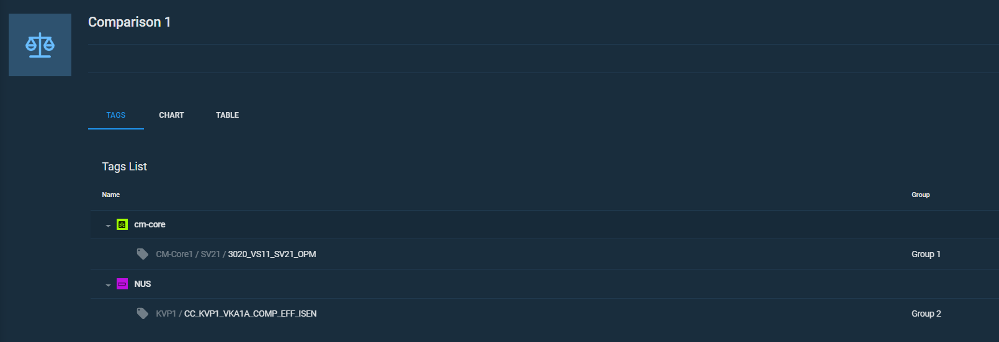
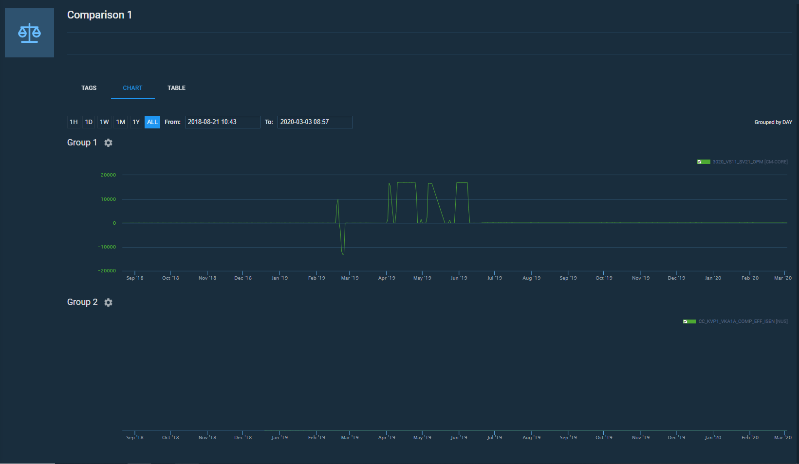
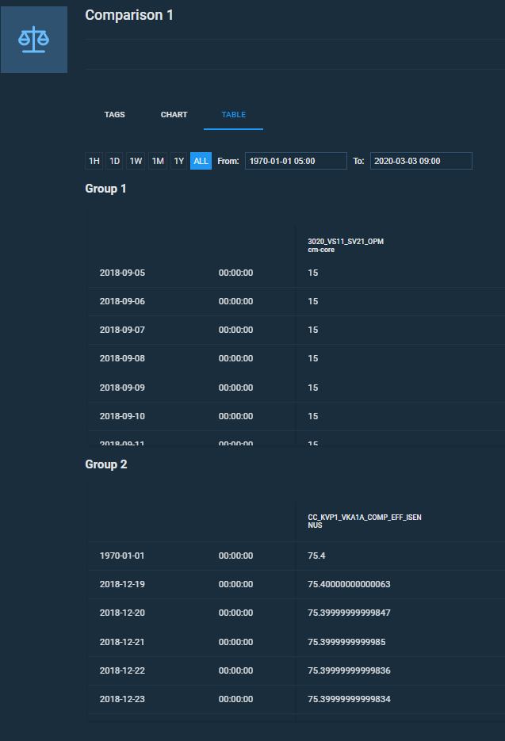

Comparisons#
Brief overview of Comparisons in Portal.
Comparison is an instrument that helps a user to monitor tags from different projects or within one project.
You can view information on different time scales: from one hour to a year. Also, the all-time performance overview of the tag is available. Tag values can be grouped by less than a minute, one minute, an hour and one-day intervals.
There are three available ways of comparison displaying:
- Tags view shows all the tags that have been picked to a comparison.
- Chart view is a visualization of the values of tags.
- Table view displays tag values at some certain points of time.



Tags, regardless of their project, can be organised in groups on your demand. Create up to seven different groups of tags.
Export and print chart comparisons. There are export and print buttons in the header of the Chart tab. You can export Comparisons into PNG or PDF formats.
Parent article:
- ControlMachines™ HMI Portal
This article contains general information about ControlMachines™ HMI Portal, its features, and interface.
Related articles:
- Sharing comparisons
Briefly about sharing comparisons.